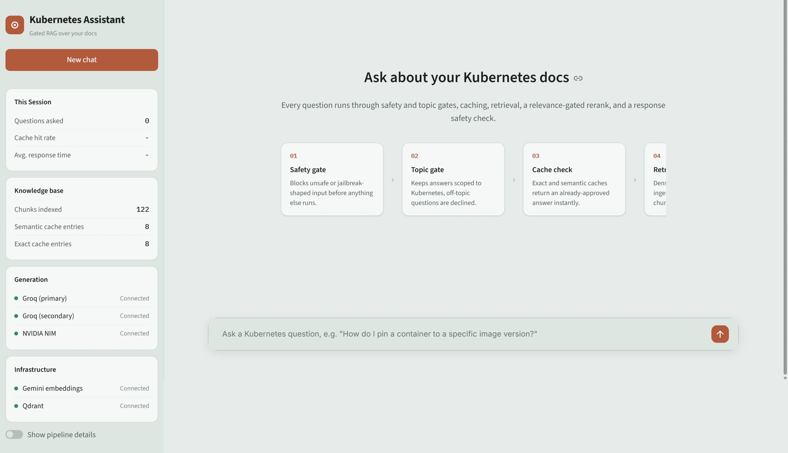
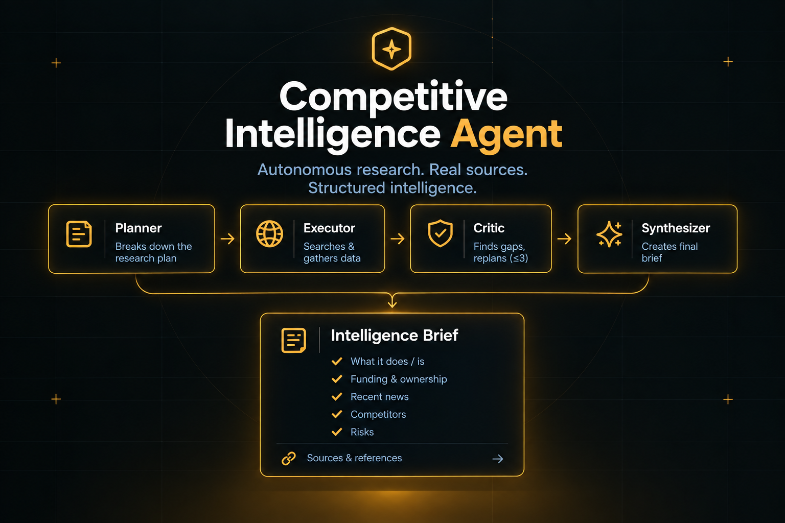
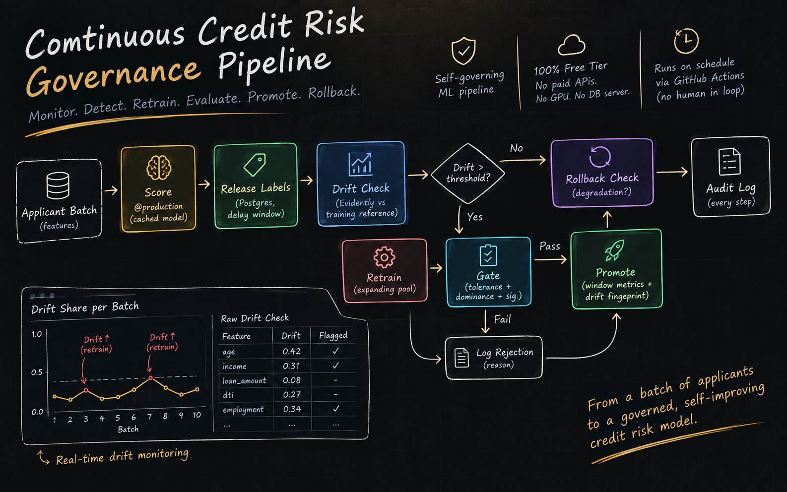
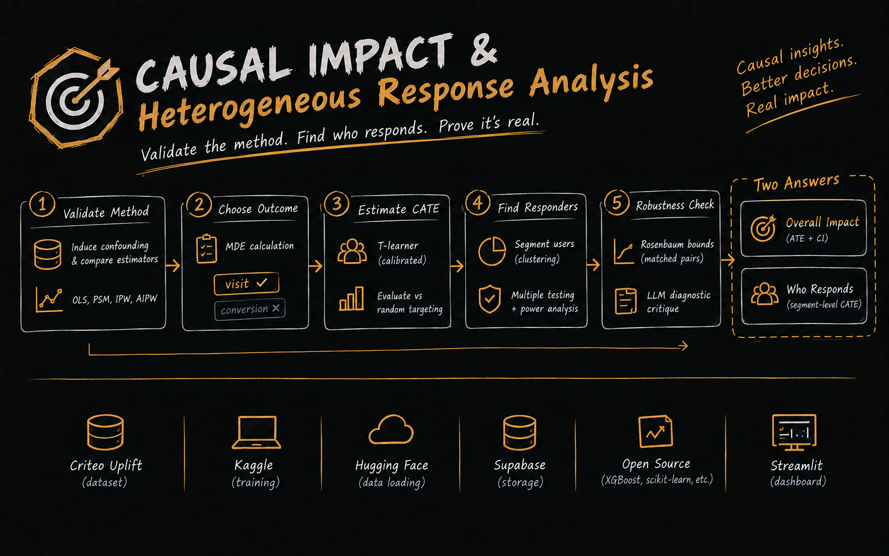
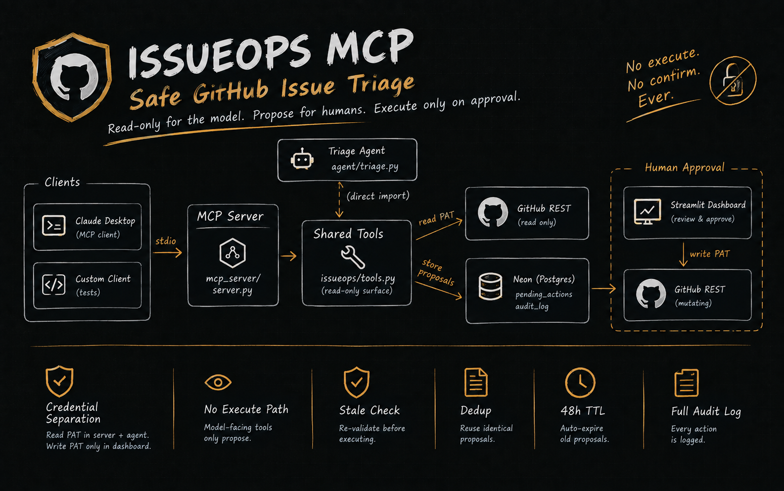
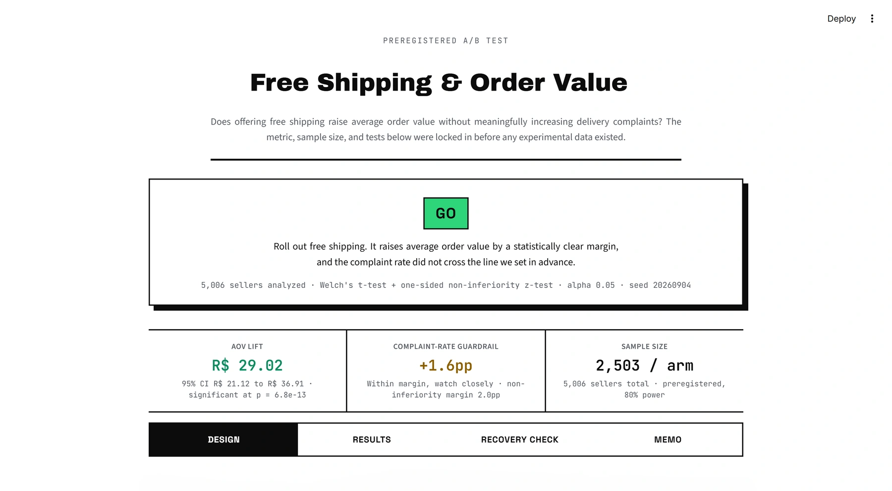
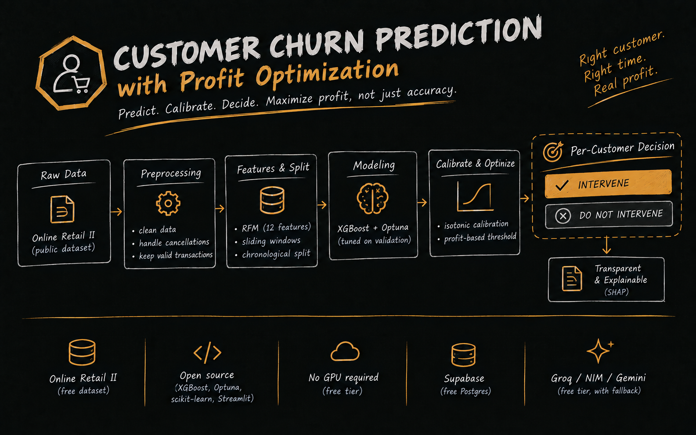
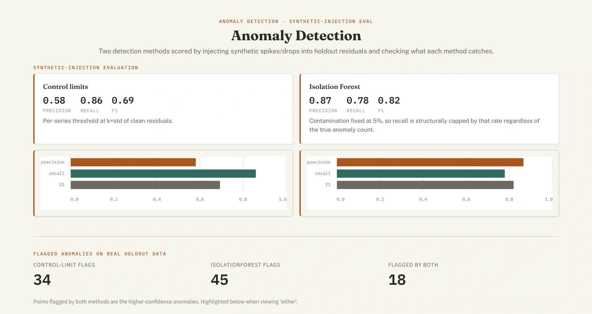
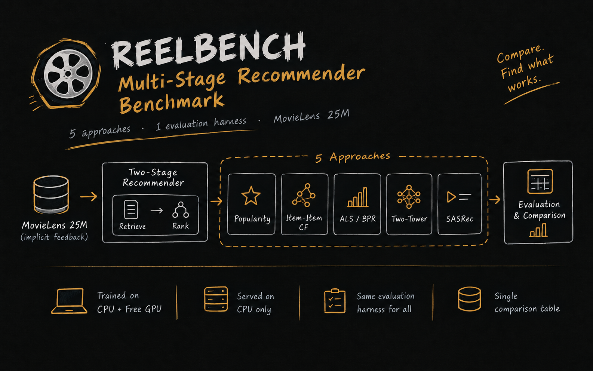

GenAI / RAG
Kubernetes Gated RAG
A production-oriented RAG system for Kubernetes Q&A that answers only from ingested docs, defended in depth.
6Ragas metrics
3provider failover links
8starter eval rows
AI/ML Engineer
Recommenders, RAG, agents, MLOps, and causal inference. Each project ships with tests, benchmarks, and documented limits.
I build ML and LLM systems end to end: retrieval, agents, recommenders, causal inference, and the MLOps around them. In each project I fix the evaluation design first, build second, and report what the measurements show, including where the system falls short. Everything here runs on free-tier infrastructure.
Four projects that show how I work: fix the design before touching data, then report the measurements.

GenAI / RAG
A production-oriented RAG system for Kubernetes Q&A that answers only from ingested docs, defended in depth.

AI Agents
An autonomous research agent that turns a company name into a sourced, traceable intelligence brief.

MLOps
A self-governing credit-risk pipeline that scores, monitors drift, retrains, gates promotion, and rolls back on its own.

Causal Inference
Validates four causal estimators against known ground truth before trusting any of them on a real segment-level question.
Modeling, LLM systems, and the production tooling around them.
Python, SQL, Bash
XGBoost, LightGBM, scikit-learn, PyTorch, Prophet, SARIMA, Isolation Forest, ALS / BPR, Two-Tower & SASRec, SHAP, Optuna
Power Analysis, Welch's t-test, Benjamini-Hochberg, Rosenbaum Bounds, IPW / AIPW, CATE (T-learner), Qini, McNemar / Bootstrap CI, statsmodels, scikit-uplift
RAG, LangGraph, Multi-Agent Orchestration, MCP (stdio server), Qdrant, FAISS, FlashRank, Ragas, NeMoGuard, Groq, NVIDIA NIM, Gemini API
MLflow, DVC, Evidently, Drift Detection (K-S), Model Governance & Rollback, GitHub Actions, CI/CD, Logfire
FastAPI, Streamlit, Postgres (Neon), Supabase, SQLite, pandas, NumPy
C++, Docker, AWS, Tableau, Plotly
Coding Blocks
Lovely Professional University, Punjab, India
If you are building something that needs a system tested as hard as it is trained, I would like to hear about it.
Nine personal projects across AI, ML, and data science, each with an evaluation approach and known limits.
Showing 9 of 9 projects
GenAI / RAG
A production-oriented RAG system for Kubernetes Q&A that answers only from ingested docs, defended in depth.
AI Agents
An autonomous research agent that turns a company name into a sourced, traceable intelligence brief.

AI Agents / MCP
A guarded MCP server for GitHub issue triage. Every mutating action is only proposed, and runs only after a human approves it.
MLOps
A self-governing credit-risk pipeline that scores, monitors drift, retrains, gates promotion, and rolls back on its own.
Causal Inference
Validates four causal estimators against known ground truth before trusting any of them on a real segment-level question.

Experimentation
A preregistered A/B pipeline where the metric, MDE, sample size, and tests are locked before any experimental data exists.

Data Science
Predicts churn, then decides who to target by expected profit rather than a raw probability cutoff.

Forecasting
Retail demand forecasting and anomaly detection benchmarked across four models, with grounded, verified LLM reporting.

Recommender Systems
Five recommendation approaches benchmarked head to head on MovieLens 25M under one evaluation harness.